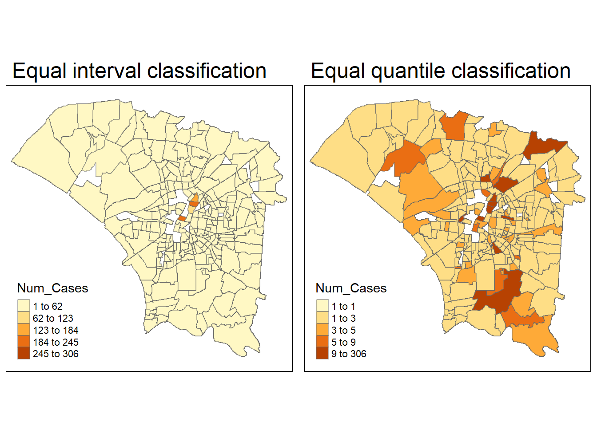
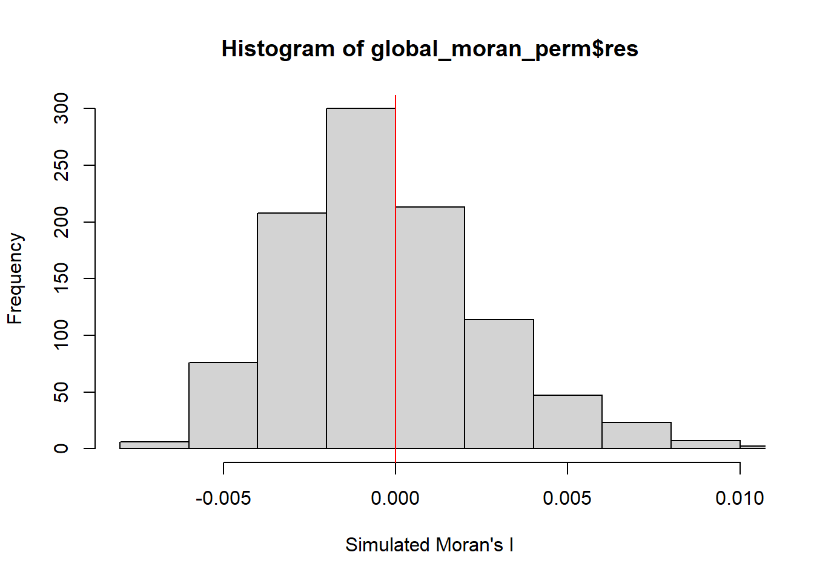
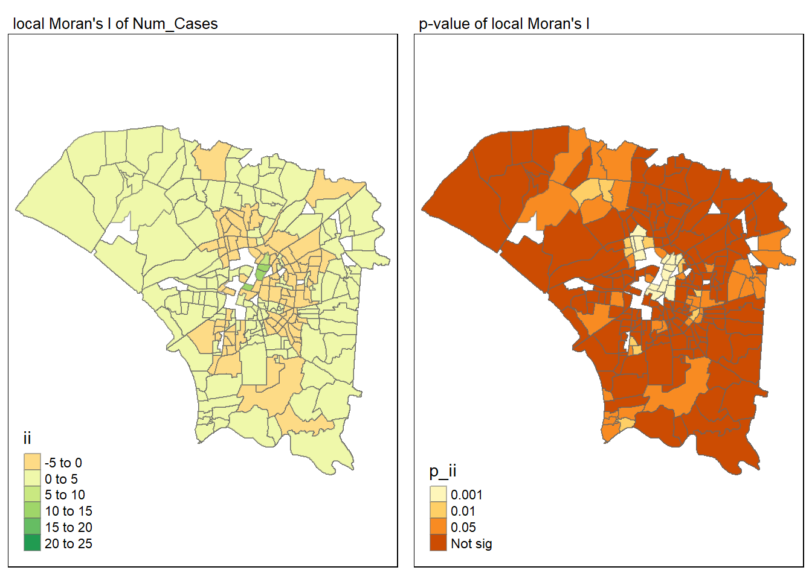
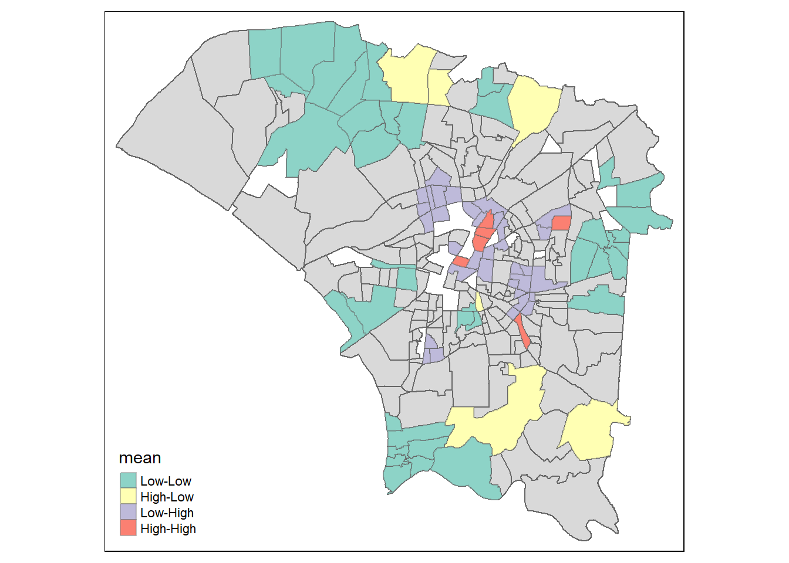

Code
install.packages("maptools", repos = "https://packagemanager.posit.co/cran/2023-10-13")Some parts of this document have hidden codes that are kept PRIVATE for now. They contain confidential codes which I will ONLY be disclosing them on 1 March 2024 (week 9).
I will ONLY provide explanations for the exercise right now, and it is subjected to change during the duration of this exercise.
It is important to be honest and fair in our work, and respect the privacy of the work of others, so as to uphold academic integrity throughout the duration of this take-home exercise.
Dengue Hemorrhagic Fever (in short dengue fever) is one of the most widespread mosquito-borne diseases in the most tropical and subtropical regions. It is an acute disease caused by dengue virus infection which is transmitted by female Aedes aegypti and Aedes albopictus mosquitoes. In 2015, Taiwan had recorded the most severe dengue fever outbreak with more than 43,000 dengue cases and 228 deaths. Since then, the annual reported dengue fever cases were maintained at the level of not more than 200 cases. However, in 2023, Taiwan recorded 26703 dengue fever cases. Figure below reveals that more than 25,000 cases were reported at Tainan City.

As a curious geospatial analytics green horn, you are interested to discover:
if the distribution of dengue fever outbreak at Tainan City, Taiwan are independent from space and space and time.
If the outbreak is indeed spatial and spatio-temporal dependent, then, you would like to detect where are the clusters and outliers, and the emerging hot spot/cold spot areas.
install.packages("maptools", repos = "https://packagemanager.posit.co/cran/2023-10-13")Installing the required tools for the analysis (e.g. sf, tidyverse, maptools, etc)
pacman::p_load(maptools, sf, raster, spatstat, tmap, tidyverse, arrow, lubridate, dplyr, spNetwork, spacetime, spdep, sfdep)This is where we import the data and prepare it before analysis.
Let’s use st_read() of sf package to import these two geospatial data sets into R. And we will be using other functions to prepare our data upon importing them. Moreover, we will also perform some simple operation on the datasets to gather some basic analysis.
The 2 data sets are:
TAIWAN_VILLAGE_2020, a geospatial data of village boundary of Taiwan. It is in ESRI shapefile format. The data is in Taiwan Geographic Coordinate System. (Source: Historical map data of the village boundary: TWD97 longitude and latitude)
Dengue_Daily.csv, an aspatial data of reported dengue cases in Taiwan since 1998. (Source: Dengue Daily Confirmed Cases Since 1998. Below are selected fields that are useful for this study:
發病日: Onset date
最小統計區中心點X: x-coordinate
最小統計區中心點Y: y-coordinate
Firstly, we will import the data for the Taiwan Village Data
taiwan_village_sf <- st_read(dsn = "data/geospatial", layer = "TAINAN_VILLAGE")Let’s check the referencing system info of this taiwan_village_sf
st_crs(taiwan_village_sf)Currently, we have 649 rows of data in taiwan_village_sf.

Therefore, we have to filter the taiwan_village_sf for village level of D01, D02, D04, D06, D07, D08, D32, and D39 of the Tainan City, Taiwan
Now, filtered_taiwan_village_sf will consist of 258 rows of data. This will help to reduce the amount of data that is needed to be processed in the later parts.

Since we’re happy with the dataset for filtered_taiwan_village_sf, let’s save it to a rds so that it would be easier for us to retrieve it in the future
Import the filtered_taiwan_village_sf rds data
Let’s visualise how filtered_taiwan_village_sf looks like when we plot it

Firstly, we will import the data for the Dengue Data
dengue_sf <- read_csv("data/aspatial/Dengue_Daily.csv")As dengue_sf consists of 106861 rows of data, with 26 types of variables, as shown below. Therefore we need to filter it

Let’s filter dengue_sf for fever cases that are confined to epidemiology week 31-50 of 2023, as well as the selected variables which we will be working with (發病日: Onset date, 居住縣市: County, 居住鄉鎮: Town, 居住村里: Village, 最小統計區中心點X: x-coordinate, 最小統計區中心點Y: y-coordinate)
In the code chunk above, we filtered the specific data that falls under the weeks that we are interested to look into. Moreover, we also use the “select” line to select the specific variables that we deemed useful for our research.
After filtering dengue_sf, and storing it in filtered_dengue_sf, the amount of data has reduced significantly from 106861 rows of data in dengue_sf, to 25480 rows of data in filtered_dengue_sf (with 3 types of variables).

Let’s check the data type of each variable before we proceed to performing left-join
Let’s transform some of our variables and prepare it for the left-join operation in step 2.3
Let’s create 3 different variables that stores the week number, month and day respectively. This is to facilitate our research and analysis in the later parts of this take-home exercise.
However, in our dengue dataset, we have noticed that there are rows of data with no village name. As our research is focused mainly on the village level, we will remove the rows with village name = “None”. [SKIP FIRST]

Since we have the finalised filtered_dengue_sf, it is important for us to create a new table to store the number of cases, grouped by the day and village. We will store it in cases_by_day_village dataset.
A snippet of the resulting dataset for cases_by_day_village looks like this:

In addition to the cases_by_day_village dataset, it would be useful for us to create a new table to store the total number of cases, grouped by the week and village. We will store it in cases_by_week_village dataset.
A snippet of the resulting dataset for cases_by_week_village looks like this:

To get the number of cases in througout Tainan city during the whole epidemiology week 31-50, it would be useful for us to create a new table to store the number of cases for each village. We will store it in cases_by_village dataset.
A snippet of the resulting dataset for cases_by_village looks like this:

To get the number of cases in a week througout Tainan city, it would be useful for us to create a new table to store the number of cases, grouped by the week alone. We will store it in cases_by_week dataset.
A snippet of the resulting dataset for cases_by_week looks like this:

Now, we have found valuable analysis from our dataset, let’s move on to the next section where we keep them in rds form.
Since we’re happy with the dataset for filtered_taiwan_village_sf, and datasets from our analysis in 2.2.3, let’s save it to a rds so that it would be easier for us to retrieve it in the future
Import the filtered_taiwan_village_sf rds data
Let’s take a look at our Dengue datasets in 2.2 before we move on to 2.3 :)
filtered_dengue_sf

Let’s perform a join operation to combine the variables in filtered_taiwan_village_sf and filtered_dengue_sf.
Our goal is to perform the join operation to the cases_by_week_village and supplement it with the specific geospatial and relevant variable. We will be operating the join operation based on the Village Name of both dataset as we want to retrieve the distinct geospatial infromation from filtered_taiwan_village_sf for each dengue cases.
The reason for using cases_by_week_village is because we are focusing on the number of cases in each village on a weekly basis.
Before we perform the left-join operation, we can see that the cases_by_village is not a spatial data. As for filtered_taiwan_village_sf, we have already checked the data type of the file is already in spatial data type (TWD97).
st_crs(cases_by_week_village)Coordinate Reference System: NATherefore we have to convert the cases_by_week_village dataset into a spatial data.
Before we transform it into a spatial data, we have to vet through our data in cases_by_week_village dataset. There are rows where there are “NA” values for the village name, X and Y coordinates, which could potentially cause issues in the future analysis.

And we have to clean up the NA values before proceeding to cases_by_week_village into a spatial data.
One option that we could remove the NA values which could potentially create problems in our future analysis, and they wouldn’t provide us with accurate analysis. On the other hand, if we were to adopt the other option which is to find the mean / median of the x and y coordinates for the missing values, it would also affect the accuracy of our analysis.
Now that we have cleared the NA values, let’s transform the case_by_village dataset into a sf
The join dataset would be named taiwan_village_dengue
After performing the left-join operation, the taiwan_village_dengue dataset seems to have “NA” values. This is due to the fact that the village name (居住村里) value in the filtered_dengue_sf is not found in the list of village name (VILLNAME) in filtered_taiwan_village_sf.
Coordinate Reference System:
User input: TWD97
wkt:
GEOGCRS["TWD97",
DATUM["Taiwan Datum 1997",
ELLIPSOID["GRS 1980",6378137,298.257222101,
LENGTHUNIT["metre",1]]],
PRIMEM["Greenwich",0,
ANGLEUNIT["degree",0.0174532925199433]],
CS[ellipsoidal,2],
AXIS["geodetic latitude (Lat)",north,
ORDER[1],
ANGLEUNIT["degree",0.0174532925199433]],
AXIS["geodetic longitude (Lon)",east,
ORDER[2],
ANGLEUNIT["degree",0.0174532925199433]],
USAGE[
SCOPE["Horizontal component of 3D system."],
AREA["Taiwan, Republic of China - onshore and offshore - Taiwan Island, Penghu (Pescadores) Islands."],
BBOX[17.36,114.32,26.96,123.61]],
ID["EPSG",3824]]Let’s take a look at our newly joined dataset.

We have noticed that there are “NA” values in the Num_Cases column of the newly joined dateset.

So, we have to remove it before going to the next step. We will remove the rows with has “NA” values in the epi_week_num column.
taiwan_village_dengue <- taiwan_village_dengue[!is.na(taiwan_village_dengue$Num_Cases), ]Since we are happy with our finalised taiwan_village_dengue dataset, let’s keep it in our rds for easy reference in the future
Import the filtered_taiwan_village_sf rds data
Let’s take a look at our taiwan_village_dengue dataset :)

Let’s plot taiwan_village_dengue and see how it looks like.
We will create an “total_cases_by_village” dataset to count the number of cases in each village, and thereafter plot it on tmap, so that we can easily identify which village has a higher number of cases on the map.

Based on the map, we can see that there are some villages that have a significantly higher number of cases. If we look at our total_cases_by_village dataset, we can see that these are the villages with the highest number of cases.
Let’s visualize taiwan_village_dengue before we move on to performing global spatial autocorrelation analysis

We will be performing Global Measures of Spatial Autocorrelation in this section.
Before we can perform the global spatial autocorrelation analysis, we need to construct the spatial weights of the study area. The spatial weights is used to define the neighbourhood relationships between the geographical units.
We have to prepare our dataset before computing the spatial weights
The code calculates a spatial weights matrix using the queen contiguity criterion for the villages in Taiwan represented by polygons in the taiwan_village_dengue dataset, and then provides a summary of this matrix.
Simple feature collection with 2902 features and 16 fields
Geometry type: POLYGON
Dimension: XY
Bounding box: xmin: 120.0627 ymin: 22.89401 xmax: 120.2925 ymax: 23.09144
Geodetic CRS: TWD97
First 10 features:
nb
1 2, 33, 34, 35, 36, 37, 38, 1542, 1543, 2080, 2081, 2082, 2083
1.1 1, 33, 34, 35, 36, 37, 38, 1542, 1543, 2080, 2081, 2082, 2083
2 4, 5, 6, 7, 1652, 1653, 1654, 1655, 1656, 1657, 1658, 1659, 1660, 1661, 1662, 1663, 1664, 1665, 1666, 1667, 1668, 1669, 1670, 1685, 1686, 1687, 1688, 1689, 1690, 1691, 1797, 1798, 1799, 1800, 1801, 1802, 1803, 1804, 1805, 1806, 1807, 1808, 2160, 2161, 2162, 2163, 2502, 2503, 2504, 2505, 2506, 2507, 2508, 2509, 2510, 2511, 2512, 2513
2.1 3, 5, 6, 7, 1652, 1653, 1654, 1655, 1656, 1657, 1658, 1659, 1660, 1661, 1662, 1663, 1664, 1665, 1666, 1667, 1668, 1669, 1670, 1685, 1686, 1687, 1688, 1689, 1690, 1691, 1797, 1798, 1799, 1800, 1801, 1802, 1803, 1804, 1805, 1806, 1807, 1808, 2160, 2161, 2162, 2163, 2502, 2503, 2504, 2505, 2506, 2507, 2508, 2509, 2510, 2511, 2512, 2513
2.2 3, 4, 6, 7, 1652, 1653, 1654, 1655, 1656, 1657, 1658, 1659, 1660, 1661, 1662, 1663, 1664, 1665, 1666, 1667, 1668, 1669, 1670, 1685, 1686, 1687, 1688, 1689, 1690, 1691, 1797, 1798, 1799, 1800, 1801, 1802, 1803, 1804, 1805, 1806, 1807, 1808, 2160, 2161, 2162, 2163, 2502, 2503, 2504, 2505, 2506, 2507, 2508, 2509, 2510, 2511, 2512, 2513
2.3 3, 4, 5, 7, 1652, 1653, 1654, 1655, 1656, 1657, 1658, 1659, 1660, 1661, 1662, 1663, 1664, 1665, 1666, 1667, 1668, 1669, 1670, 1685, 1686, 1687, 1688, 1689, 1690, 1691, 1797, 1798, 1799, 1800, 1801, 1802, 1803, 1804, 1805, 1806, 1807, 1808, 2160, 2161, 2162, 2163, 2502, 2503, 2504, 2505, 2506, 2507, 2508, 2509, 2510, 2511, 2512, 2513
2.4 3, 4, 5, 6, 1652, 1653, 1654, 1655, 1656, 1657, 1658, 1659, 1660, 1661, 1662, 1663, 1664, 1665, 1666, 1667, 1668, 1669, 1670, 1685, 1686, 1687, 1688, 1689, 1690, 1691, 1797, 1798, 1799, 1800, 1801, 1802, 1803, 1804, 1805, 1806, 1807, 1808, 2160, 2161, 2162, 2163, 2502, 2503, 2504, 2505, 2506, 2507, 2508, 2509, 2510, 2511, 2512, 2513
3 9, 10, 11, 12, 13, 14, 15, 16, 17, 18, 19, 20, 901, 902, 903, 904, 905, 906, 907, 908, 909, 910, 911, 912, 913, 914, 915, 916, 917, 918, 919, 920, 921, 922, 923, 924, 925, 926, 927, 928, 929, 930, 931, 932, 2164, 2169, 2170, 2316, 2317, 2318, 2319, 2320, 2321, 2322, 2323, 2324, 2325, 2326, 2327, 2328, 2329, 2330, 2331
3.1 8, 10, 11, 12, 13, 14, 15, 16, 17, 18, 19, 20, 901, 902, 903, 904, 905, 906, 907, 908, 909, 910, 911, 912, 913, 914, 915, 916, 917, 918, 919, 920, 921, 922, 923, 924, 925, 926, 927, 928, 929, 930, 931, 932, 2164, 2169, 2170, 2316, 2317, 2318, 2319, 2320, 2321, 2322, 2323, 2324, 2325, 2326, 2327, 2328, 2329, 2330, 2331
3.2 8, 9, 11, 12, 13, 14, 15, 16, 17, 18, 19, 20, 901, 902, 903, 904, 905, 906, 907, 908, 909, 910, 911, 912, 913, 914, 915, 916, 917, 918, 919, 920, 921, 922, 923, 924, 925, 926, 927, 928, 929, 930, 931, 932, 2164, 2169, 2170, 2316, 2317, 2318, 2319, 2320, 2321, 2322, 2323, 2324, 2325, 2326, 2327, 2328, 2329, 2330, 2331
wt
1 0.07692308, 0.07692308, 0.07692308, 0.07692308, 0.07692308, 0.07692308, 0.07692308, 0.07692308, 0.07692308, 0.07692308, 0.07692308, 0.07692308, 0.07692308
1.1 0.07692308, 0.07692308, 0.07692308, 0.07692308, 0.07692308, 0.07692308, 0.07692308, 0.07692308, 0.07692308, 0.07692308, 0.07692308, 0.07692308, 0.07692308
2 0.01724138, 0.01724138, 0.01724138, 0.01724138, 0.01724138, 0.01724138, 0.01724138, 0.01724138, 0.01724138, 0.01724138, 0.01724138, 0.01724138, 0.01724138, 0.01724138, 0.01724138, 0.01724138, 0.01724138, 0.01724138, 0.01724138, 0.01724138, 0.01724138, 0.01724138, 0.01724138, 0.01724138, 0.01724138, 0.01724138, 0.01724138, 0.01724138, 0.01724138, 0.01724138, 0.01724138, 0.01724138, 0.01724138, 0.01724138, 0.01724138, 0.01724138, 0.01724138, 0.01724138, 0.01724138, 0.01724138, 0.01724138, 0.01724138, 0.01724138, 0.01724138, 0.01724138, 0.01724138, 0.01724138, 0.01724138, 0.01724138, 0.01724138, 0.01724138, 0.01724138, 0.01724138, 0.01724138, 0.01724138, 0.01724138, 0.01724138, 0.01724138
2.1 0.01724138, 0.01724138, 0.01724138, 0.01724138, 0.01724138, 0.01724138, 0.01724138, 0.01724138, 0.01724138, 0.01724138, 0.01724138, 0.01724138, 0.01724138, 0.01724138, 0.01724138, 0.01724138, 0.01724138, 0.01724138, 0.01724138, 0.01724138, 0.01724138, 0.01724138, 0.01724138, 0.01724138, 0.01724138, 0.01724138, 0.01724138, 0.01724138, 0.01724138, 0.01724138, 0.01724138, 0.01724138, 0.01724138, 0.01724138, 0.01724138, 0.01724138, 0.01724138, 0.01724138, 0.01724138, 0.01724138, 0.01724138, 0.01724138, 0.01724138, 0.01724138, 0.01724138, 0.01724138, 0.01724138, 0.01724138, 0.01724138, 0.01724138, 0.01724138, 0.01724138, 0.01724138, 0.01724138, 0.01724138, 0.01724138, 0.01724138, 0.01724138
2.2 0.01724138, 0.01724138, 0.01724138, 0.01724138, 0.01724138, 0.01724138, 0.01724138, 0.01724138, 0.01724138, 0.01724138, 0.01724138, 0.01724138, 0.01724138, 0.01724138, 0.01724138, 0.01724138, 0.01724138, 0.01724138, 0.01724138, 0.01724138, 0.01724138, 0.01724138, 0.01724138, 0.01724138, 0.01724138, 0.01724138, 0.01724138, 0.01724138, 0.01724138, 0.01724138, 0.01724138, 0.01724138, 0.01724138, 0.01724138, 0.01724138, 0.01724138, 0.01724138, 0.01724138, 0.01724138, 0.01724138, 0.01724138, 0.01724138, 0.01724138, 0.01724138, 0.01724138, 0.01724138, 0.01724138, 0.01724138, 0.01724138, 0.01724138, 0.01724138, 0.01724138, 0.01724138, 0.01724138, 0.01724138, 0.01724138, 0.01724138, 0.01724138
2.3 0.01724138, 0.01724138, 0.01724138, 0.01724138, 0.01724138, 0.01724138, 0.01724138, 0.01724138, 0.01724138, 0.01724138, 0.01724138, 0.01724138, 0.01724138, 0.01724138, 0.01724138, 0.01724138, 0.01724138, 0.01724138, 0.01724138, 0.01724138, 0.01724138, 0.01724138, 0.01724138, 0.01724138, 0.01724138, 0.01724138, 0.01724138, 0.01724138, 0.01724138, 0.01724138, 0.01724138, 0.01724138, 0.01724138, 0.01724138, 0.01724138, 0.01724138, 0.01724138, 0.01724138, 0.01724138, 0.01724138, 0.01724138, 0.01724138, 0.01724138, 0.01724138, 0.01724138, 0.01724138, 0.01724138, 0.01724138, 0.01724138, 0.01724138, 0.01724138, 0.01724138, 0.01724138, 0.01724138, 0.01724138, 0.01724138, 0.01724138, 0.01724138
2.4 0.01724138, 0.01724138, 0.01724138, 0.01724138, 0.01724138, 0.01724138, 0.01724138, 0.01724138, 0.01724138, 0.01724138, 0.01724138, 0.01724138, 0.01724138, 0.01724138, 0.01724138, 0.01724138, 0.01724138, 0.01724138, 0.01724138, 0.01724138, 0.01724138, 0.01724138, 0.01724138, 0.01724138, 0.01724138, 0.01724138, 0.01724138, 0.01724138, 0.01724138, 0.01724138, 0.01724138, 0.01724138, 0.01724138, 0.01724138, 0.01724138, 0.01724138, 0.01724138, 0.01724138, 0.01724138, 0.01724138, 0.01724138, 0.01724138, 0.01724138, 0.01724138, 0.01724138, 0.01724138, 0.01724138, 0.01724138, 0.01724138, 0.01724138, 0.01724138, 0.01724138, 0.01724138, 0.01724138, 0.01724138, 0.01724138, 0.01724138, 0.01724138
3 0.01587302, 0.01587302, 0.01587302, 0.01587302, 0.01587302, 0.01587302, 0.01587302, 0.01587302, 0.01587302, 0.01587302, 0.01587302, 0.01587302, 0.01587302, 0.01587302, 0.01587302, 0.01587302, 0.01587302, 0.01587302, 0.01587302, 0.01587302, 0.01587302, 0.01587302, 0.01587302, 0.01587302, 0.01587302, 0.01587302, 0.01587302, 0.01587302, 0.01587302, 0.01587302, 0.01587302, 0.01587302, 0.01587302, 0.01587302, 0.01587302, 0.01587302, 0.01587302, 0.01587302, 0.01587302, 0.01587302, 0.01587302, 0.01587302, 0.01587302, 0.01587302, 0.01587302, 0.01587302, 0.01587302, 0.01587302, 0.01587302, 0.01587302, 0.01587302, 0.01587302, 0.01587302, 0.01587302, 0.01587302, 0.01587302, 0.01587302, 0.01587302, 0.01587302, 0.01587302, 0.01587302, 0.01587302, 0.01587302
3.1 0.01587302, 0.01587302, 0.01587302, 0.01587302, 0.01587302, 0.01587302, 0.01587302, 0.01587302, 0.01587302, 0.01587302, 0.01587302, 0.01587302, 0.01587302, 0.01587302, 0.01587302, 0.01587302, 0.01587302, 0.01587302, 0.01587302, 0.01587302, 0.01587302, 0.01587302, 0.01587302, 0.01587302, 0.01587302, 0.01587302, 0.01587302, 0.01587302, 0.01587302, 0.01587302, 0.01587302, 0.01587302, 0.01587302, 0.01587302, 0.01587302, 0.01587302, 0.01587302, 0.01587302, 0.01587302, 0.01587302, 0.01587302, 0.01587302, 0.01587302, 0.01587302, 0.01587302, 0.01587302, 0.01587302, 0.01587302, 0.01587302, 0.01587302, 0.01587302, 0.01587302, 0.01587302, 0.01587302, 0.01587302, 0.01587302, 0.01587302, 0.01587302, 0.01587302, 0.01587302, 0.01587302, 0.01587302, 0.01587302
3.2 0.01587302, 0.01587302, 0.01587302, 0.01587302, 0.01587302, 0.01587302, 0.01587302, 0.01587302, 0.01587302, 0.01587302, 0.01587302, 0.01587302, 0.01587302, 0.01587302, 0.01587302, 0.01587302, 0.01587302, 0.01587302, 0.01587302, 0.01587302, 0.01587302, 0.01587302, 0.01587302, 0.01587302, 0.01587302, 0.01587302, 0.01587302, 0.01587302, 0.01587302, 0.01587302, 0.01587302, 0.01587302, 0.01587302, 0.01587302, 0.01587302, 0.01587302, 0.01587302, 0.01587302, 0.01587302, 0.01587302, 0.01587302, 0.01587302, 0.01587302, 0.01587302, 0.01587302, 0.01587302, 0.01587302, 0.01587302, 0.01587302, 0.01587302, 0.01587302, 0.01587302, 0.01587302, 0.01587302, 0.01587302, 0.01587302, 0.01587302, 0.01587302, 0.01587302, 0.01587302, 0.01587302, 0.01587302, 0.01587302
VILLCODE COUNTYNAME TOWNNAME VILLNAME VILLENG COUNTYID COUNTYCODE
1 67000350032 臺南市 安南區 青草里 Qingcao Vil. D 67000
1.1 67000350032 臺南市 安南區 青草里 Qingcao Vil. D 67000
2 67000270011 臺南市 仁德區 保安里 Bao'an Vil. D 67000
2.1 67000270011 臺南市 仁德區 保安里 Bao'an Vil. D 67000
2.2 67000270011 臺南市 仁德區 保安里 Bao'an Vil. D 67000
2.3 67000270011 臺南市 仁德區 保安里 Bao'an Vil. D 67000
2.4 67000270011 臺南市 仁德區 保安里 Bao'an Vil. D 67000
3 67000370005 臺南市 中西區 赤嵌里 Chihkan Vil. D 67000
3.1 67000370005 臺南市 中西區 赤嵌里 Chihkan Vil. D 67000
3.2 67000370005 臺南市 中西區 赤嵌里 Chihkan Vil. D 67000
TOWNID TOWNCODE NOTE epi_week_num Village Num_Cases
1 D06 67000350 <NA> 37 青草里 1
1.1 D06 67000350 <NA> 41 青草里 1
2 D32 67000270 <NA> 31 保安里 1
2.1 D32 67000270 <NA> 37 保安里 3
2.2 D32 67000270 <NA> 41 保安里 5
2.3 D32 67000270 <NA> 41 安康里 12
2.4 D32 67000270 <NA> 45 安東里 7
3 D08 67000370 <NA> 35 赤嵌里 4
3.1 D08 67000370 <NA> 36 赤嵌里 1
3.2 D08 67000370 <NA> 37 赤嵌里 4
geometry spatial_weights
1 POLYGON ((120.1176 23.08387... Inf
1.1 POLYGON ((120.1176 23.08387... Inf
2 POLYGON ((120.2304 22.93544... 0.01851852
2.1 POLYGON ((120.2304 22.93544... 0.01851852
2.2 POLYGON ((120.2304 22.93544... 0.01851852
2.3 POLYGON ((120.2304 22.93544... 0.01851852
2.4 POLYGON ((120.2304 22.93544... 0.01851852
3 POLYGON ((120.2012 22.99966... 0.01960784
3.1 POLYGON ((120.2012 22.99966... 0.01960784
3.2 POLYGON ((120.2012 22.99966... 0.01960784We will compute the Global Moran’s I value
List of 2
$ I: num 0.073
$ K: num 225We will be using Moran’s I statistics to test our taiwan_village_dengue dataset.
Moran I test under randomisation
data: x
weights: listw
Moran I statistic standard deviate = 25.476, p-value < 2.2e-16
alternative hypothesis: greater
sample estimates:
Moran I statistic Expectation Variance
7.304100e-02 -3.447087e-04 8.297563e-06 Based on the output, the Moran I statistic standard deviate measures the degree of spatial autocorrelation in the variable, Num_cases, in the taiwan_viilage_dengue dataset. In this case, it is 25.476, which indicates a high level of spatial autocorrelation.
In addition, the p-value is very low, at less than 2.2e-16, which indicates that the the spatial correlation is statistically significant. This rejects the null hypothesis that there is no spatial autocorrelation in the data.
The Moran I statistic of 0.073 also indicates that there is a positive spatial autocorrelation.
Based on the above explanation, it suggests that the areas with high number of dengue cases tend to be clustered together geographically.
Let’s perform simulation on our Moran’s I test
Monte-Carlo simulation of Moran I
data: x
weights: listw
number of simulations + 1: 1000
statistic = 0.073041, observed rank = 1000, p-value < 2.2e-16
alternative hypothesis: two.sidedThe result indicates that the spatial autocorrelation is statistically significant with the p-value of less than 0.01.
Let’s display our findings in a histogram so that we can visualise it better
Firstly, we can get a statistical summary of the Monte Carlo Moran’s I output
Min. 1st Qu. Median Mean 3rd Qu. Max.
-0.0066688 -0.0022801 -0.0005763 -0.0002545 0.0013864 0.0144195 Now, we can plot the histogram

We will compute the Local Moran’s I value
The above code would create a new sf file called “lisa” which stores the important information for the local moran’s I values (such as ii, eii, var_ii, etc)

For effective comparison, it will be better for us to plot both maps next to each other as shown below.
We will create a choropeth map by using the values in the “ii” field in lisa sf for the local Moran’s I, and the values in the “p_ii_sim” field in lisa sf for the p-value.

We will plot the LISA map to check for any kinds of outliers and clusters. It is done by combining the Local Moran’s I of the different areas and their respective p-values.

Based on the above map, and comparing it with our initial distribution map (below), we can observe that:

Areas highlighted in red as classified as High-High Clusters (red), where there are a high number of dengue cases, and it could also indicate that it is surrounded by areas with high dengue case counts. Comparing it to our initial distribution map that we plot in the beginning (in our join-operation), we can see that the areas with higher dengue cases are situated in area where it is highlighted in a darker shade of blue (ranging from 76.2 to 616.0 cases)
Areas highlighted in red as classified as Low-Low Clusters (green), where there are a lower number of dengue cases, and it could also indicate that it is surrounded by areas with low dengue case counts. Comparing to the initial distribution map (shown before this), we can see that the Low-Low Clusters are mostly situated at areas where there are lower number of cases (below 47.8)
For both types of outliers, the High-Low (highlighted in yellow) and Low-High (highlighted in purple) outlier areas, they are a high and low number of cases respectively. However, they are surrounded by areas where there is a low or high number of cases respectively, which is contradictory to the actual situation in their areas.
For High-Low outlier areas, it means that local authorities should seriously look into these areas as they are more prone to an outbreak or transmission, even though they are surrounded by areas with low case counts.
For Low-High outlier areas, it means that the area is well-prepared with preventive measures when there is an outbreak or transmission. This means that it is worth looking into the preventive strategies that they have in-place, which could be adopted by the areas with high case counts in the future.
It is interesting to gain more insights into the different areas by filtering the areas based on the Moran’s I test and p-value, which has significantly helped in identifying clusters which have a high or low number of cases.
It is also able to identify outlier areas which is interesting to dive into as it provides shows which area is more prone to an outbreak, or area where preventive measures are in-place, despite being surrounded by areas which has a different case counts.